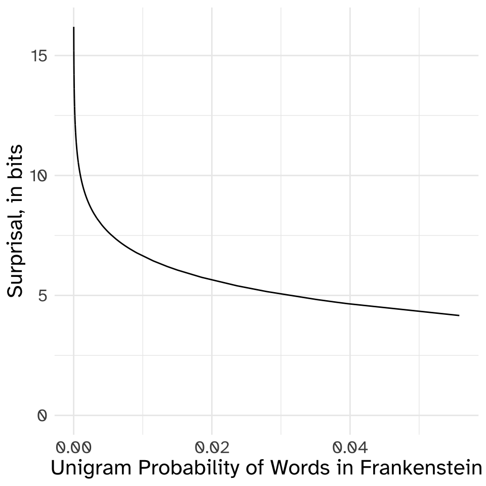

ngrams - Perplexity
Evaluating NGram Models
NGram Models are often described in terms of their perplexity, which is a technical term from Information Theory. Rather than just dump the formula in here, let’s walk through it, since these information theoretic notions kind of keep coming up.
Information - In Bits
From bits to probability - a light switch analogy
One light switch
Let’s say we have a house with one room, and that one room has one light switch, and that light switch could be on or off . Here’s a table of all of the possible lighting states of the house:
| Lighting Config | Switch 1 |
|---|---|
| on | |
| off |
With just 1 switch, we have two possible lighting configurations. If each lighting configuration was equally possible, then the probability of seeing either lighting configuration is 0.5. In information theory terms, our switch is a “bit” (just like the computer bit), and you need 1 bit to represent a 50% probability.
\[ 1\text{bit} = 2~\text{states} = \frac{1}{2} \text{probability} = 0.5 \]
Two light switches
Now, if our house had two rooms, (a living room and a kitchen), and each room had a switch, we can also workout how many different lighting configurations there are for the whole house.
| lighting configurations | Living Room Switch | Kitchen Switch |
|---|---|---|
| living room on, kitchen on | ||
| living room on, kitchen off | ||
| living room off, kitchen on | ||
| living room off, kitchen off |
With 2 switches, we can describe 4 different lighting configurations in the house. And again, if every lighting configuration was equally likely, that means there is a \(\frac{1}{4}=0.25\) probability we are describing with these two bits.
\[ 2\text{bits} = 4~\text{states}=\frac{1}{4}=0.25 \]
Three Light switches
Let’s add 1 more room to the house (and then we’ll stop) that also has a switch. Here’s the table of house lighting configurations.
| lighting configuration | Living Room Switch | Kitchen Switch | Bedroom Switch |
|---|---|---|---|
| living room on, kitchen on, bedroom on | |||
| living room on, kitchen on, bedroom off | |||
| living room on, kitchen off, bedroom on | |||
| living room on, kitchen off, bedroom off | |||
| living room off, kitchen on, bedroom on | |||
| living room off, kitchen on, bedroom off | |||
| living room off, kitchen off, bedroom on | |||
| living room off, kitchen off, bedroom off |
With 3 switches, we can describe 8 different house light configurations
\[ 3\text{bits} = 8~\text{states} = \frac{1}{8} = 0.125 \]
N Light switches
There is a general formula for figuring out how many states can be described by N bits, and therefore the probability of events they can represent.
\[ N~\text{bits} = 2^N ~\text{states} = \frac{1}{2^N}~\text{probability} \]
The number 2 got in there because that’s how many different options there are for each switch (on or off ).
From probability to bits (a.k.a. “surprisal”)
Ok, what if we didn’t know how many bits, or switches we had, but we knew the probability of something, and we want to know how many bits we need to represent that probability. For example, maybe we estimated the unigram probability of “the” in the novel Frankenstein.
R
frank %>%
count(word) %>%
mutate(prob = n/sum(n)) %>%
filter(word == "the")# A tibble: 1 × 3
word n prob
<chr> <int> <dbl>
1 the 4194 0.0558We’re in a classic math word problem: Solve for N
\[ 0.056 = \frac{1}{2^N} \]
I’ve put the math steps to work this out in the collapsed Details block below, but to get N here, we need to take the negative \(\log_2\) of the probability
\[ \frac{1}{2^N} = 2^{-N} \]
\[ \log_2(2^{-N}) = -N \]
\[ -\log_2(2^{-N}) = N \]
\[ N = -\log_2(0.056) = 4.16 \]
We’ve obviously moved away from the concrete analogy of light switches, since it’s impossible to have 4 and 0.16 switches in your house. But this is a measure of how much information the probability takes up. It’s also often called surprisal as a technical term.
Why “Surprisal”
Imagine I came up to you and said:
The sun rose this morning.
That’s not especially informative or surprising, since the sun rises every morning. The sun rising in the morning is a very high probability event,1 so it’s not surprising it happens, and in the information theory world, we don’t need very many bits for it.
On the other hand, if someone came up to me and said:
The sun failed to rise this morning.
That is surprising! It’s also very informative. Thank you for telling me! I wasn’t expecting that! The smaller the probability of an event, the more surprising and informative it is if it happens, the larger the surprisal value is.
Here’s a plot showing the relationship between the unigram probability of a word in Frankenstein, and its surprisal in bits.

Expected Surprisal, (a.k.a Entropy)
So, we can calculate the probability of individual words in a book like Frankenstein, and from that probability, we can calculate each word’s surprisal.
The next thing to ask is what is the expected surprisal in a book like Frankenstein? As we’re reading the book, very common words will happen very often, and less common words will happen less often. What is our overall experience of reading the book like, in terms of surprisal? Here’s a table of some words that have a wide range of frequencies in the book.
R
frank %>%
count(word) %>%
arrange(desc(n)) %>%
mutate(total = sum(n),
prob = n/sum(n),
surprisal = -log2(prob)) %>%
filter(word %in% c("the", "monster", "snow", "russia"))# A tibble: 4 × 5
word n total prob surprisal
<chr> <int> <int> <dbl> <dbl>
1 the 4194 75143 0.0558 4.16
2 monster 31 75143 0.000413 11.2
3 snow 16 75143 0.000213 12.2
4 russia 2 75143 0.0000266 15.2 We could try just taking the average of the surprisal column to get the “average surprisal”, but that’s not quite right in terms of capturing the expected surprisal. Yes, words like snow and russia have a large surprisals, so they should drag our estimate upwards, but they don’t, by definition, happen all that often, so they shouldn’t drag it up too much.
What we do instead is multiply the surprisal value of each word by its probability, and sum it up! This will capture our experience of the having a small surprisal and happening often, and words like snow having a large surprisal, but happening less often.
This “expected surprisal” is called entropy, and is often represented by \(H(X)\)
\[ \begin{array}{ll} \text{surprisal:} & {s(x_i)=-\log_2(p(x_i))}\\ \text{entropy:} & H(X) = \sum_{i=1}^np(x_i)s(x_i) \end{array} \]
R
frank %>%
count(word) %>%
arrange(desc(n)) %>%
mutate(prob = n/sum(n),
surprisal = -log2(prob)) %>%
summarise(entropy = sum(prob * surprisal))# A tibble: 1 × 1
entropy
<dbl>
1 9.30So, on average, while reading Frankenstein, (and only paying attention to unigram distribution), we have an expected surprisal (a.k.a, entropy) of \(\approx\) 9.3 bits.
From bits back to states (a.k.a. Perplexity)
Now there are just over 7,000 unique word types in Frankenstein.2
R
frank %>%
count(word) %>%
nrow()[1] 7020But because not every word is equally likely to show up, the expected surprisal, or entropy of the book is 9.3 bits. Just above, we saw that we can calculate the number of unique states we can encode with N bits with this formula:
\[ N~\text{bits} = 2^N~\text{states} \]
If we do this with the entropy value we got in bits, that would be
\[ H(\text{Frankenstein}) \approx 9.3~\text{bits} \]
\[ 9.3\text{bits} = 2^{9.3}~\text{states} \approx 630~\text{states} \]This is the estimated “perplexity” of the unigram model. Here’s how to think about it. If we already know the probability of every word that appears in the book, and we use that probability distribution to guess each next word in the book, it’s going to be as successful as trying to guess which next state is coming up out of 630 equally probable states.
Perplexity of ngram models
In the first lecture on ngram models, we built a boring bigram model that looked like this.
And, we worked out that we could estimate the probability a new sentence like this:
P(We | <START>) \(\times\) P(saw | We) \(\times\) P(the | saw) \(\times\) P(dog | saw) \(\times\) P(<END> | dog)
| words | a | book | dog | END | I | read | saw | the | We |
|---|---|---|---|---|---|---|---|---|---|
| a | 0 | 0.5 | 0.5 | 0 | 0 | 0 | 0 | 0 | 0 |
| book | 0 | 0 | 0 | 1 | 0 | 0 | 0 | 0 | 0 |
| dog | 0 | 0 | 0 | 1 | 0 | 0 | 0 | 0 | 0 |
| I | 0 | 0 | 0 | 0 | 0 | 0.25 | 0.75 | 0 | 0 |
| read | 1 | 0 | 0 | 0 | 0 | 0 | 0 | 0 | 0 |
| saw | 0.75 | 0 | 0 | 0 | 0 | 0 | 0 | 0.25 | 0 |
| START | 0 | 0 | 0 | 0 | 0.8 | 0 | 0 | 0 | 0.2 |
| the | 0 | 0 | 1 | 0 | 0 | 0 | 0 | 0 | 0 |
| We | 0 | 0 | 0 | 0 | 0 | 0 | 1 | 0 | 0 |
\[ P(X) = 0.2 \times 1 \times 1\times 0.25 \times 1 = 0.05 \]
With this probability, we can figure out how many total bits we need to encode this probability (a.k.a. the surprisal)
\[ s(X) = -\log_2(p(X)) = -\log_2(0.05) = 4.32 \]
Now, where evaluating ngram models diverge a bit from what we were doing before is we now figure out what the surprisial is per word, so we get bits per word (including the sentence ending tag).
\[ spw(X)=\frac{-\log_2(p(X))}{N} = \frac{-\log_2(0.05)}{5} =0.86 \] To get the perplexity of this sentence, given the bigram model, we follow the formula for getting the number of states given a number of bits.
\[ pp(X) = 2^{spw(X)} = 2^{0.86} = 1.82 \]
Comparing models
If model A assigns higher probabilities to the sentences in a test set than model B, then model A will have a smaller perplexity.
Another way to think about the perplexity if ngram models, as Jurafsky & Martin point out, is that it’s the “weighted average branching factor”. Looking back at the bigram diagram above, it’s like saying “Any time you are at a node, you are, on average, choosing between 1.82 possible branches to go down.”